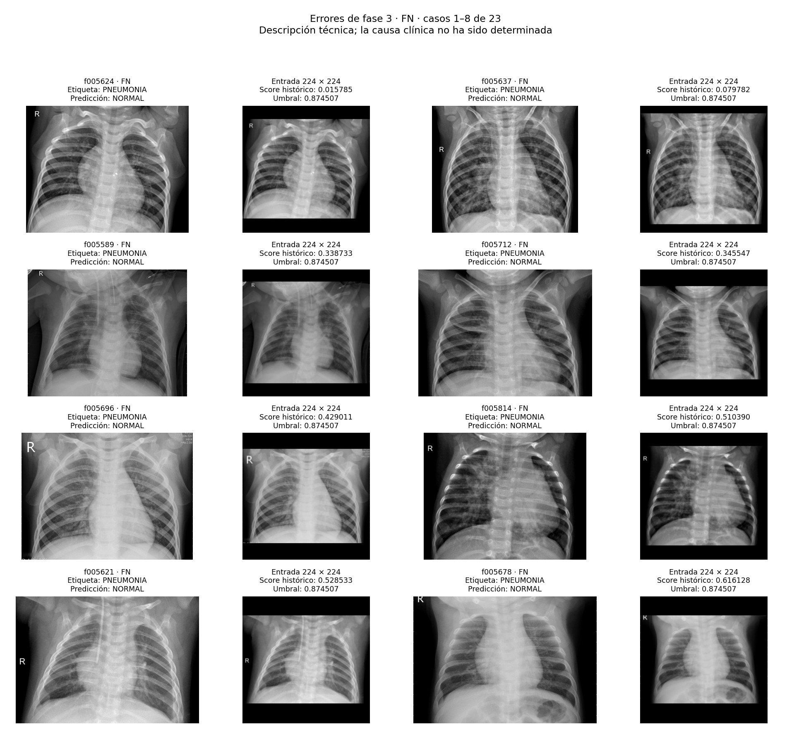
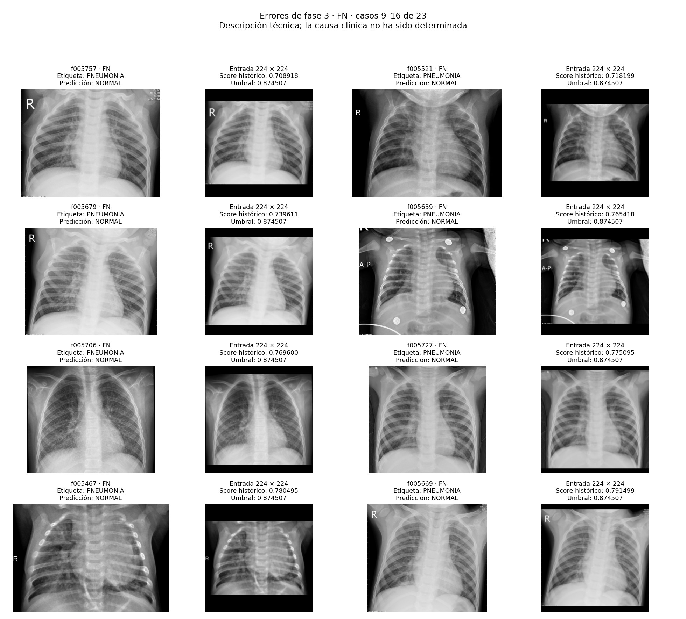
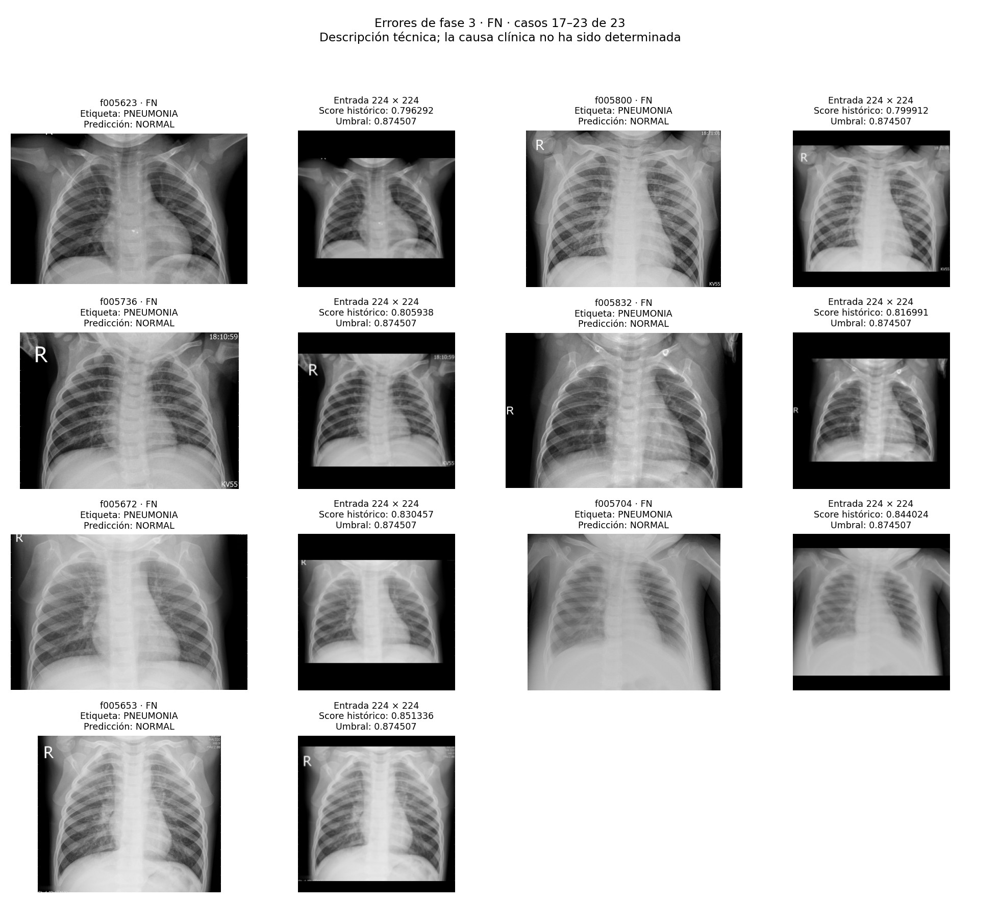
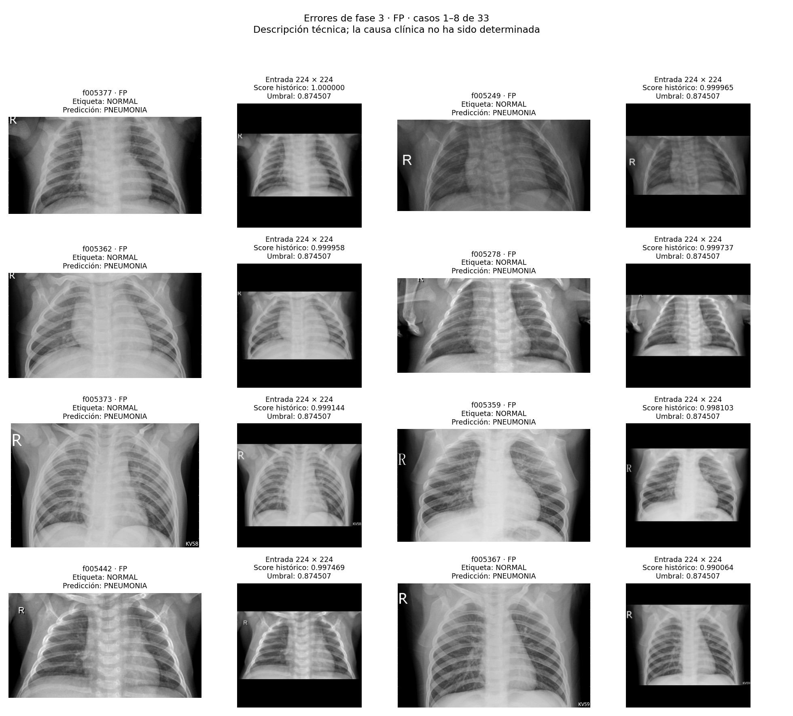
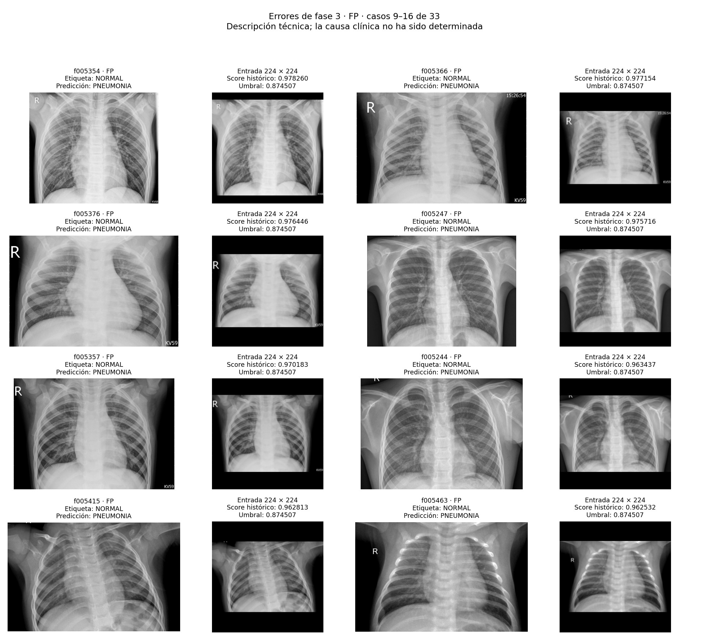
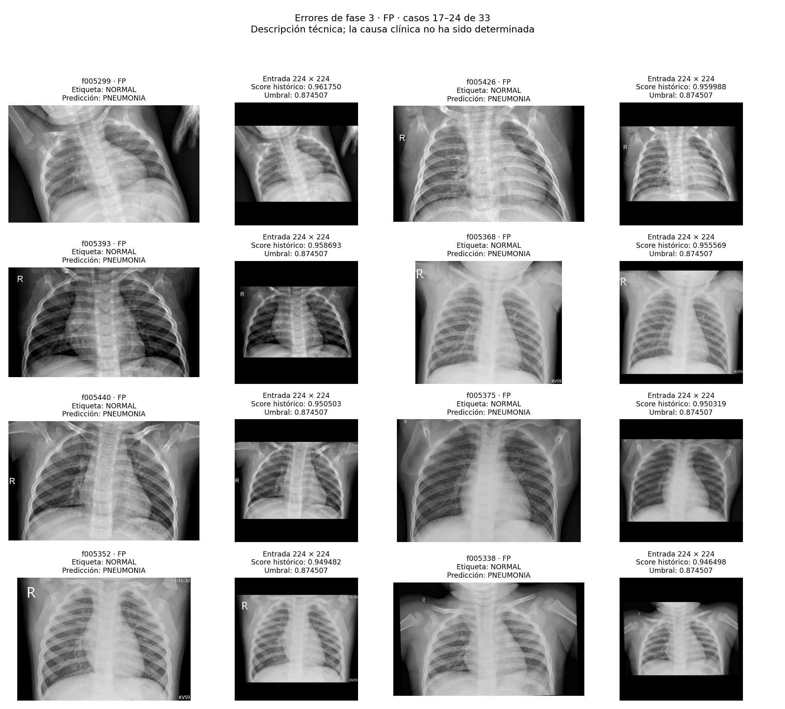
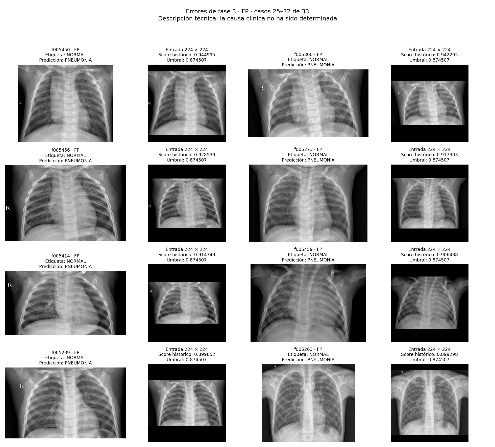
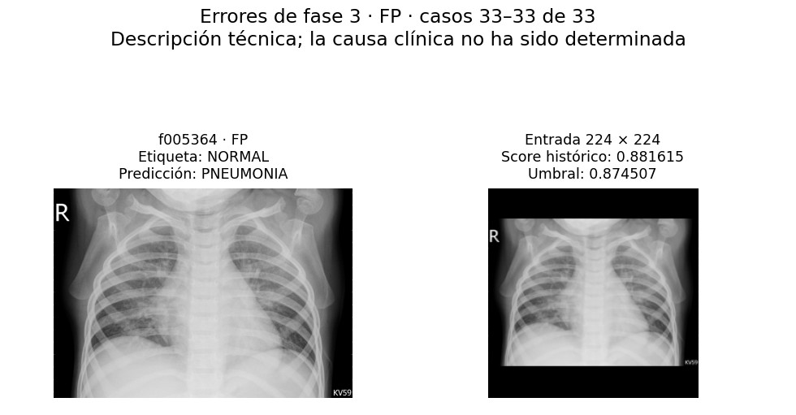

GRUPO 2 · (Juan)⁴ · PROTOTIPO ACADÉMICO
Fase 4: inferencia y revisión de errores
PARIDAD_INCOMPLETA
La paridad no está completa. Revisa los casos de discrepancia antes de afirmar equivalencia.
El modelo, las etiquetas, el preprocesamiento y el umbral 0,874506533 se conservan. Esta fase no entrena ni calibra.
Cómo registrar la revisión
Abre errores_test.csv. Completa estado_revision_humana, observacion_visual,
limitacion_o_hipotesis, revisor y fecha_revision. Describe lo observable; una causa clínica requiere valoración experta. No cambies etiquetas,
particiones, umbral o modelo a partir de esta revisión del test. El catálogo inicial mantiene la revisión humana como pendiente.
Comprobación de implementación
Tensor idéntico al preprocesamiento original; diferencia absoluta de score ≤0,01;
100 % de clases coincidentes. La tolerancia se fijó antes de comparar, por el cambio de GPU con AMP a CPU FP32; no es una tolerancia clínica.
{
"purpose": "implementation_parity_not_new_independent_validation",
"compared_at_utc": "2026-11-19T04:24:33.537247+00:00",
"device": "cpu",
"precision": "float32_without_amp",
"historical_device": "CUDA Tesla T4 + AMP; lote 64",
"n_expected": 624,
"n_checked": 624,
"new_inference_passes": 1,
"repeated_images_for_determinism": 8,
"score_absolute_tolerance": 0.01,
"required_class_agreement": 1.0,
"required_preprocessing_equality": "exact",
"score_max_abs_diff": 0.014778077602386475,
"score_median_abs_diff": 5.005323328079918e-05,
"score_p95_abs_diff": 0.005212342739105225,
"score_outside_tolerance": 5,
"class_mismatches": 0,
"preprocessing_mismatches": 0,
"errors": 0,
"repeat_max_abs_diff": 0.0,
"elapsed_seconds": 29.64445949000003,
"median_inference_ms": 27.160671999979513,
"environment": {
"python": "3.13.18",
"platform": "Linux-6.18.55+-x86_64-with-glibc2.39",
"torch": "2.11.0+cpu",
"torchvision": "0.26.0+cpu",
"pillow": "13.0.0",
"numpy": "2.1.3",
"pandas": "2.3.3",
"cpu_threads": 2
},
"model_sha256": "d12e084de1fcf84c5aa57c5f41e73bf8bc5e07730fd2e3a95c232cbddc799c33",
"threshold_changed": false,
"weights_changed": false,
"historical_metrics_changed": false,
"parity_passed": false
}Paneles de errores
Imagen original orientada y entrada real de 224 × 224. Las etiquetas y scores son históricos.

FN_01.jpg
FN_02.jpg
FN_03.jpg
FP_01.jpg
FP_02.jpg
FP_03.jpg
FP_04.jpg
FP_05.jpg
Límites del prototipo
Los puntajes no están calibrados. No se ha verificado independencia clínica de pacientes ni validación externa.
Validar un JPEG/PNG no determina que sea una radiografía de tórax. La aplicación no guarda automáticamente las imágenes cargadas.